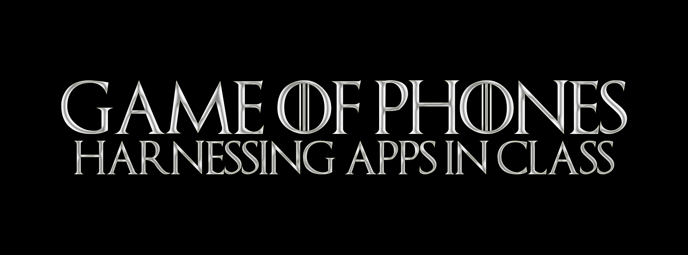

Need
Help educators respond constructively to widespread smartphone use without adopting technology for its own sake.

What if students’ phones became part of the learning design instead of a distraction from it?
First delivered at Broward College Professional Development Day and later at the Teaching Academic Survival and Success Conference, this interactive session helped educators move past app lists and technology hype. Participants experienced polling, social media, game-based quizzing, and QR codes as learners, then used a practical framework to design their own “app-tivity.” A playful Game of Thrones-inspired campaign made the session memorable; the substance stayed grounded in learning outcomes, instructor involvement, accessibility, and purposeful use of class time.
Help educators respond constructively to widespread smartphone use without adopting technology for its own sake.
Present a research-informed design framework through the very types of mobile activities participants were evaluating.
A participatory workshop combining an Instagram icebreaker, a Kahoot quiz, live polls, collaborative activity design, and a QR-code prize drawing.
TASS attendees repeatedly praised the practical ideas, interactivity, and energy—and many asked for a longer session or workshop.
The right question is not “Which app should I use?” It is “What should learners be able to do, and does a mobile component make that experience meaningfully better?”
Methods & Tools: Faculty development · Mobile learning · Active learning · Poll Everywhere · Instagram · Kahoot · QR codes